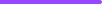
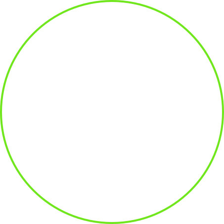

Ich bin ein angehender Webentwickler mit einer großen Leidenschaft für sauberen Code und kreative Problemlösungen. Besonders begeistert mich am Programmieren, dass man aus Ideen funktionierende Anwendungen erschaffen kann – und dabei ständig dazulernt. Meine Motivation ist es, mich kontinuierlich zu verbessern und moderne Technologien gezielt einzusetzen. Meine Inspiration ziehe ich vor allem aus neuen Herausforderungen, spannenden Projekten und dem Austausch mit anderen Entwicklern. Ich arbeite gerne strukturiert und lege Wert auf verständlichen, wartbaren Code.
Ich lebe in Deutschland und bin flexibel, was die Arbeitsweise angeht. Remote-Arbeit ist für mich genauso interessant wie hybride Modelle oder ein Arbeitsplatz vor Ort. Auch ein Umzug kommt für mich grundsätzlich in Frage.
Ich bin offen für neue Technologien und entwickle meine Fähigkeiten kontinuierlich weiter. Es macht mir Spaß, mich in neue Themen einzuarbeiten und mein Wissen praktisch anzuwenden. Lebenslanges Lernen ist für mich ein fester Bestandteil meiner Karriere.
Ich gehe Herausforderungen analytisch und strukturiert an. Mein Ziel ist es, nicht nur funktionierende, sondern auch elegante Lösungen zu finden. Dabei helfen mir Eigenschaften wie: analytisches Denken Kreativität Durchhaltevermögen Teamfähigkeit Ich sehe jedes Problem als Chance, meine Fähigkeiten weiterzuentwickeln

Show that you have unsed a variety of front-end technologies in your projects
Looking for another skill?
Reveal enthusiasm learning new technologies and frameworks